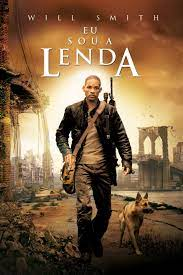

Acompanhe a história de Desmond T. Doss, um médico do exército
americano
que, durante a Segunda Guerra Mundial, se recusa a pegar em armas.
Durante a Batalha de Okinawa ele trabalha na ala médica e salva cerca de
75 homens.
Data de lançamento: 26 de janeiro de 2017 (Brasil)
Diretor: Mel Gibson
Música: Rupert Gregson-Williams
Baseado em: The Conscientious Objector de Terry Benedict
Prêmios: Oscar de Melhor Mixagem de Som,
Indicações: Oscar de Melhor Ator,

Robert Neville é um brilhante cientista e o único sobrevivente de uma
epidemia que transformou os humanos em mutantes sedentos por sangue.
Andando pela cidade de Nova York, ele procura por outros possíveis
sobreviventes e tenta achar a cura da praga usando seu próprio sangue,
que é imune.

Após Thanos eliminar metade das criaturas vivas, os Vingadores têm de lidar
com a perda de amigos e entes queridos. Com Tony Stark vagando perdido no espaço sem
água e comida, Steve Rogers e Natasha Romanov lideram a resistência contra o titã louco.
Data de lançamento: 25 de abril de 2019 (Brasil)
Bilheteria: 2,798 bilhões USD
Orçamento: 356 milhões USD (2019)
Adaptação de: Vingadores
Música: Alan Silvestri
Prêmios: Critics' Choice Movie Award: Melhor Filme de Ação,

Dominic Toretto e Letty vivem uma vida pacata ao lado do filho.
Mas eles logo são ameaçados pelo passado de Dom: seu irmão desaparecido
Jakob, que retorna e está trabalhando ao lado de Cipher.
Cabe a Dom reunir a equipe novamente para enfrentá-los.
Data de lançamento: 24 de junho de 2021 (Brasil)
Diretor: Justin Lin
Música composta por: Brian Tyler
Produção: Vin Diesel, Justin Lin, Samantha Vincent,
Neal H. Moritz, Joe Roth, Clayton Townsend, Jeff Kirschenbaum
Roteiro: Justin Lin, Chris Morgan, Gary Scott Thompson, Daniel Casey
Autores: Justin Lin, Gary Scott Thompson, Daniel Casey